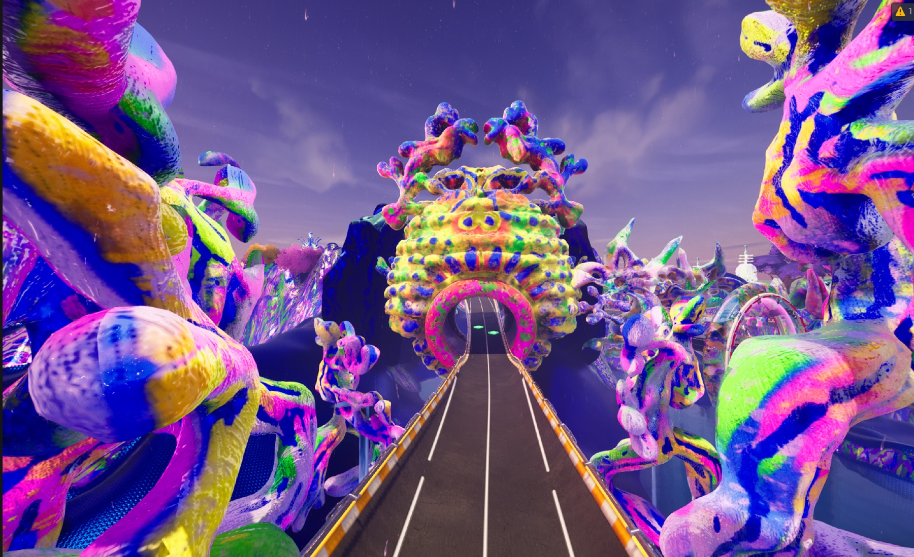
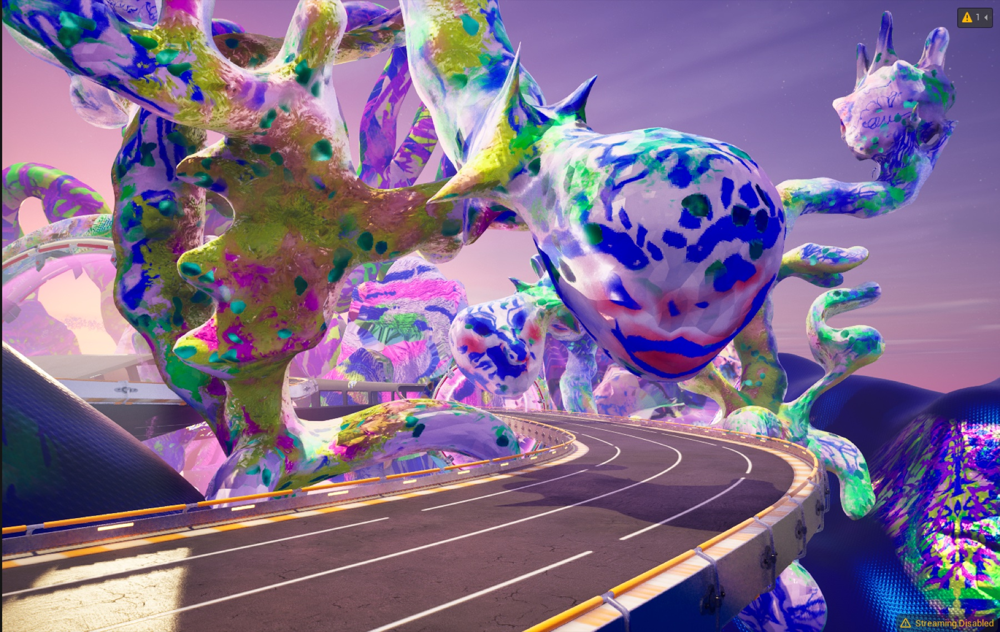
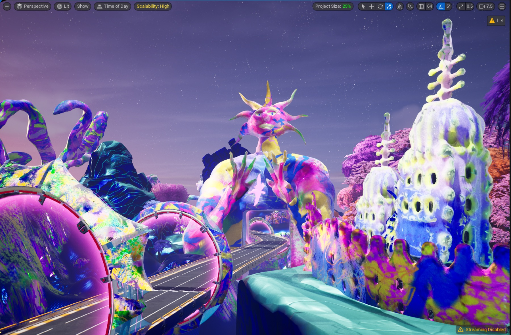

SACRED HYPER RACE
Art direction, level design and level assembly in Unreal Engine for “Sacred Hyper Race”, a race map on the Fortnite platform, made with MultiGamesStudio in one month. The track runs through violet organic forms and past creatures to a temple at the finish.




Low-poly models from the map — drag to rotate